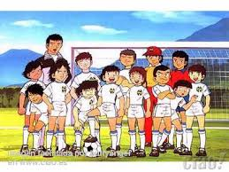

¿Quien Soy?
MI NOMBRE ES MIGUEL EDUARDO MELO PICAZO, NACI EL 12 DE DICIEMBRE DE 1999 EN LA CIUDAD DE PACHUCA, MIS PADRES SON AURORA PICAZO PACHECO Y MI PADRE EDGAR MIGUEL MELO CASTRO, HE VIVIDO MUY FELIZ A LO LAGO DE MIS 16 AÑOS CON TODO EL APOYO Y CARIÑO DE TODA MI FAMILIA LA VERDAD ESTOY MUY A GUSTO, SIN IMPORTAR LOS MOMENTOS QUE YO TENGA QUE VIVIR A LO LARGO DE MI VIDA, PUESTO QUE SON LAS ETAPAS QUE TENDRA, SOY UNA PERSONA A LA QUE LE GUSTA QUE LAS PERSONAS SONRIAN A PESAR DE TODOS LOS PROBLEMAS QUE PUEDAN A LLEGAR A TENER , SIN IMPORTAR COMO ESTE YO , ME GUSTA MUCHO VIAJAR, CONOCER LUGARES NUEVOS
Miguel Eduardo
¿Cuales Son Mis Logros?

LOS LOGROS QUE EH LLEGADO A OBTENER SON CON MUCHO SACRIFICIO Y TAMBIEN DE ALGUNA FORMA DEDICACION Y MUCHO TIEMPO, LOGRE ENTRAR A UN EQUIPO DE FUTBOL EN MI NIÑEZ, QUE POR MI DEDICACION A LAS PRACTICAS DE FUTBOL, QUE CUANDO ESTUVE DENTRO DE ESE CLUB ME SENTI LLENO DE ENERGIA Y SATISFACCION.
Miguel Eduardo
¿Cuales Son Mis Pasatiempos?
Como pasatiempos favoritos se encuentra divertirme con mis amigos y familia demas me gusta mucho jugar futbol con compañeros, amigos y conocidos tambien otra de las cosas que difruto hacer es jugar videojuegos y escuchar musica.
Miguel Eduardo
¿Cuales Son Mis Aspiraciones?
MIS ASPIRACIONES SON DE VIVIR MUY FELIZ CON MI FAMILIA QUE CON EL ESFUERZO MIO YO SE QUE LLEGARE A LOGRAR UNA FAMILIA COMO TODO HOMBRE, TAMBIEN APRENDER A SER UN EJEMPLO PARA LAS PERSONAS QUE SON CERCANAS A MI, AHORA VIVO FELIZ TRAS LAS SITUACIONES QUE ESTOY VIVIENDO Y ESPERO QUE CON LA BENDICION DE DIOS Y MI ESFUERZO TODAS MIS METAS SE CUMPLAN, ADEMAS MIS METAS PARA MI SON MUY CLARAS, SIEMPRE ESTOY CON ESE PLAN DE PODER SER UN GRAN CHEF, QUE YO SE QUE SI NO LO SOY TENDRE MUCHAS PUERTAS ABIERTAS, CON DEDICACION Y MUCHO ESFUERZO QUE CON EL PASO DEL TIEMPO NO DEJARE DE LUCHAR POR MIS SUEÑOS, Y NO DEJARE QUE NADIE LOS APLASTE A PESAR DE LO QUE VIVA TRAS EL TRANSCURSO DE MI VIDA
Miguel Eduardo